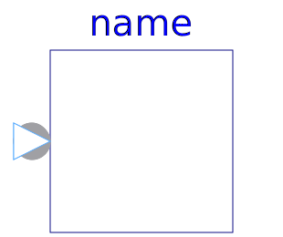

This library defines Complex input and output signals, as well as partial blocks.
| Name | Description |
|---|---|
| 'input Complex' as connector | |
| 'output Complex' as connector | |
| Single Output continuous control block | |
| ComplexMO | Multiple Output continuous control block |
| Single Input Single Output continuous control block | |
| ComplexSI2SO | 2 Single Input / 1 Single Output continuous control block |
|  ComplexSIMO | Single Input Multiple Output continuous control block |
| Multiple Input Single Output continuous control block | |
| Multiple Input Multiple Output continuous control block | |
| Multiple Input Multiple Output continuous control block with same number of inputs and outputs | |
| 2 Multiple Input / Multiple Output continuous control block | |
| Base class for continuous signal source |